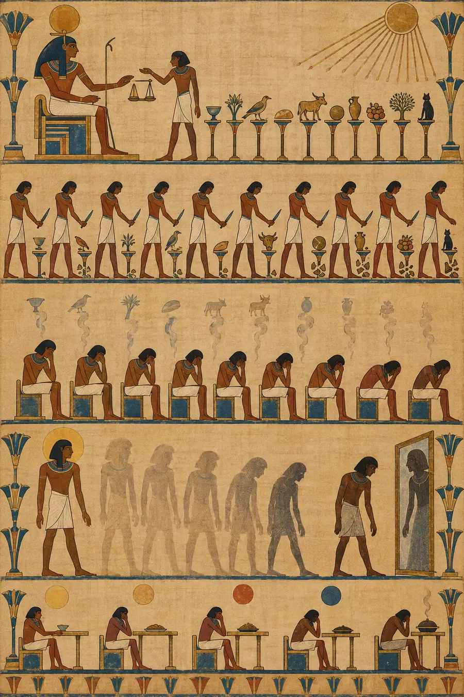
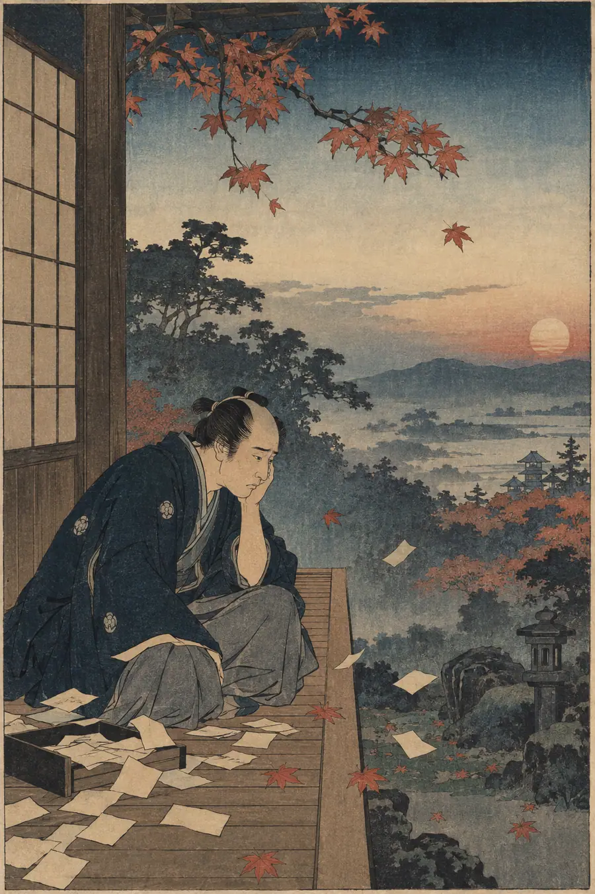
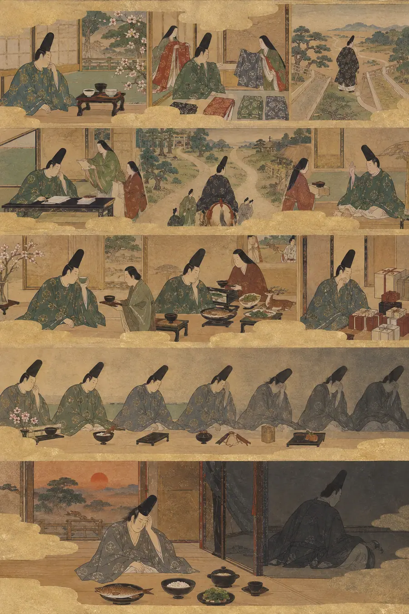
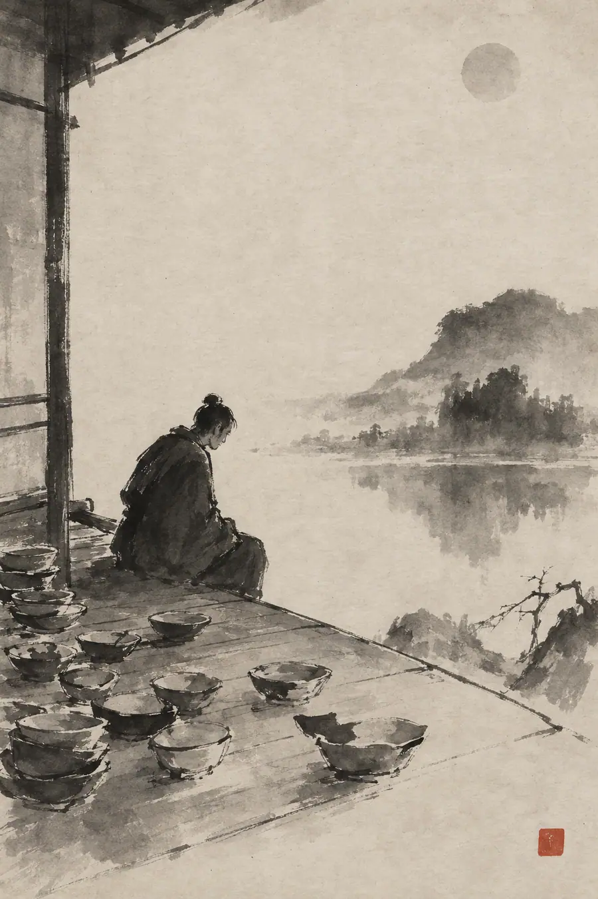
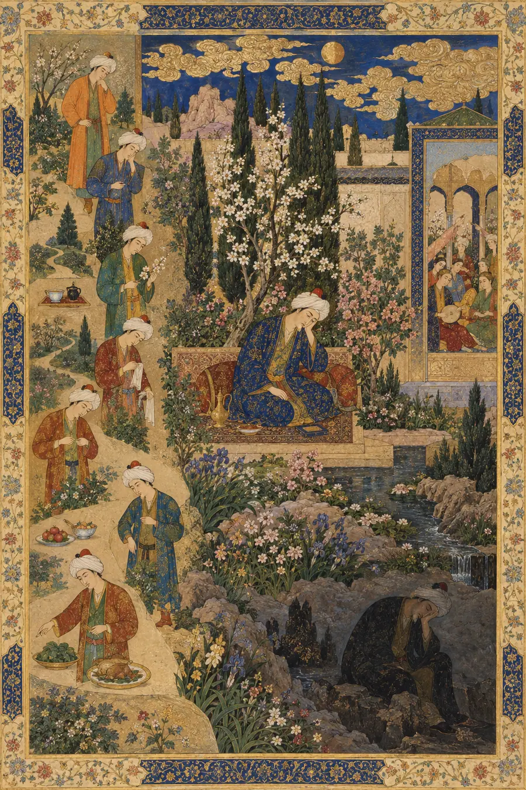
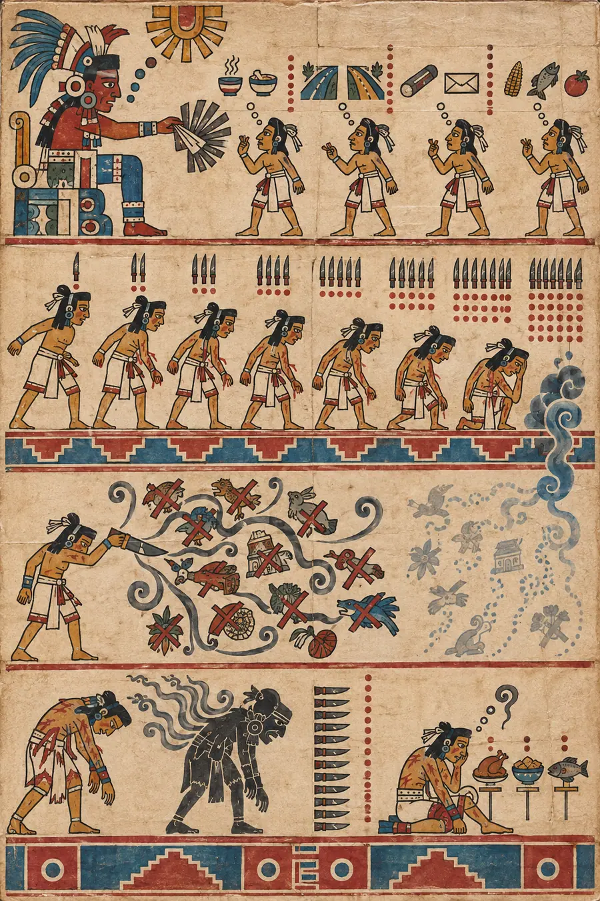
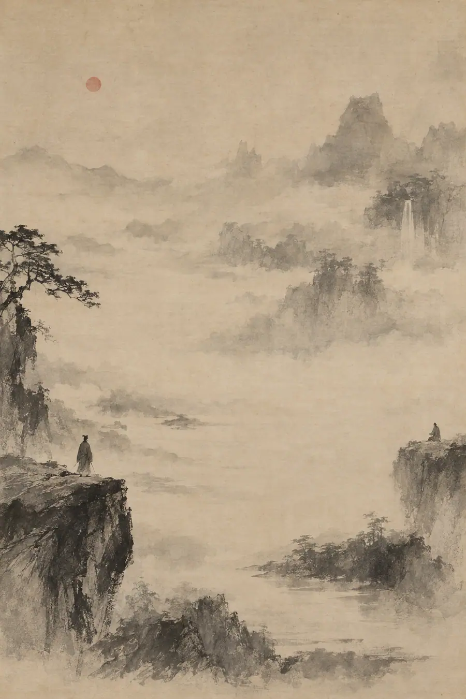
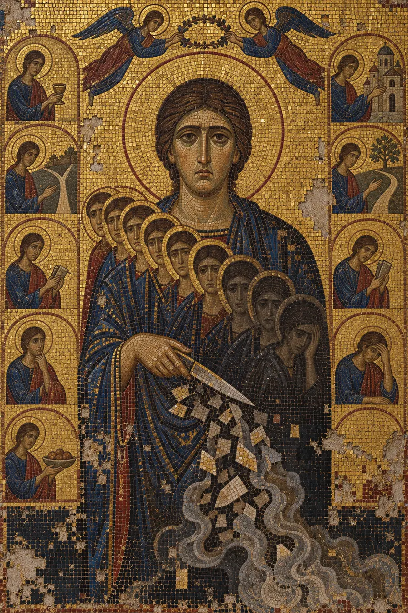
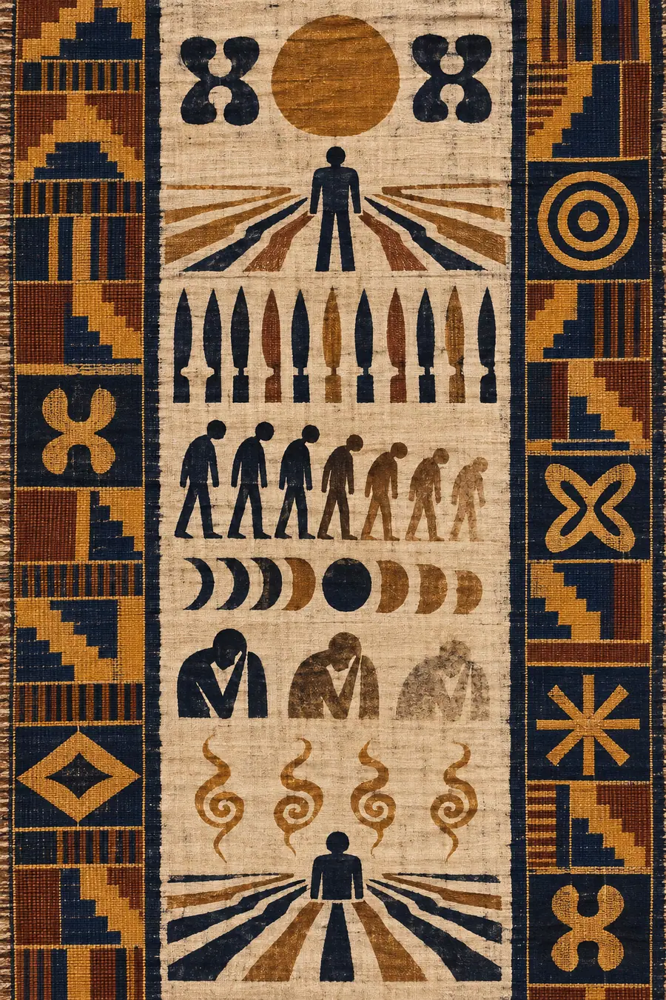

I. La Explicación Lógica
La fatiga por decisión se refiere al deterioro en la calidad de las decisiones que toma un individuo tras una larga sesión de toma de decisiones. A veces se discute en relación con la teoría del agotamiento del ego (Baumeister), aunque dicha teoría ha enfrentado desafíos de replicación. Independientemente del marco teórico, el fenómeno observable persiste: las personas que han tomado muchas decisiones seguidas muestran una capacidad reducida para sopesar contrapartidas, una mayor dependencia de la heurística y una tendencia hacia las elecciones impulsivas o la evasión de decisiones.
Una investigación sobre sentencias judiciales (Danziger et al.) encontró que la probabilidad de un fallo favorable desciende de manera constante desde la mañana hasta la mitad de la sesión, y luego aumenta bruscamente después de una pausa para comer. Los pasillos de caja de los supermercados explotan esto: las compras por impulso aumentan con la duración de la compra. Tanto Steve Jobs como Barack Obama, según se informa, redujeron sus elecciones diarias de vestuario para preservar su capacidad de decisión para los asuntos que importaban.
Las implicaciones prácticas son claras: programar las decisiones importantes para más temprano, reducir las elecciones triviales mediante la automatización o la rutina, y reconocer que la calidad de la decisión es un recurso agotable.
Esta explicación está basada en la evidencia, es práctica y está completamente hueca. Traza la curva sin situarse dentro de ella. Conoce el patrón de los fallos, pero no lo que se siente al ser el juez. Cita el pasillo de caja, pero nunca ha estado en uno a las 7 de la tarde con un carro lleno de elecciones que ya no quiere hacer.
II. La Explicación Sentida
La fatiga por decisión no es un tanque que se vacía. No es un depósito con un medidor. Es la lenta transformación de una persona que una vez eligió sabiamente en una persona que elige dejar de elegir — y el horror de verte a ti mismo convertirte en alguien que no reconoces, a media tarde, por algo que no debería importar.
Cada decisión es un pequeño acto de violencia contra las alternativas. Elegir una cosa es matar todas las demás. La palabra decidir comparte una raíz en latín — caedere, cortar. Cada decisión corta. La mayoría de los cortes son pequeños y apenas los sientes. Café o té. Esta ruta o aquella. Responder ahora o más tarde. Pero cada corte deja una herida, y para el duodécimo corte del día, no estás cansado de una forma que el descanso pueda arreglar. Estás cansado de la forma en que se cansa un cuchillo — no de ser sostenido, sino de cortar.
Esto es hevel — el vapor hebreo. Cada decisión es real mientras la tomas y luego se desvanece, sin dejar nada atrás excepto el coste de haberla tomado. No puedes señalar qué compró ese coste. Las decisiones están detrás de ti. El coste está delante de ti. Y todavía tienes que decidir qué cenar.
La acumulación es la crueldad. La segunda decisión del día la toma alguien que todavía es él mismo. La duodécima la toma alguien que ya ha decidido once cosas, cada una requiriendo la muerte de alternativas, y el cementerio de opciones no vividas está haciendo ruido. No es culpa, exactamente. Algo más sutil. El conocimiento acumulado de que cada elección podría haber sido diferente y que nunca sabrás si debería haberlo sido. Esto es mono no aware — no aplicado a los cerezos en flor, sino a las elecciones. Cada opción que no elegiste tiene su propia belleza, y sientes el patetismo de no saber, y cargas con doce pequeñas penas antes del almuerzo.
Al final de la tarde, algo cambia. La persona que podía sopesar las contrapartidas cuidadosamente esta mañana ahora solo quiere que el acto de elegir se detenga. No es pereza. No es debilidad. Es el cuerpo reconociendo que el instrumento ha sido usado más allá de su precisión y que los cortes se están volviendo torpes. El juez que concede la libertad condicional por la mañana y la niega antes del almuerzo no es malicioso. El juez es alguien que ha cortado demasiadas veces y ya no soporta cortar de nuevo, y la negación es más fácil que la liberación porque la negación no cambia nada y el cambio requiere un corte.
Esto es wyrd — el tejido. No elegiste el patrón de decisiones dispuesto ante ti hoy, pero cada una que tomas aprieta el tejido, y al final de la tarde el patrón está tan apretado que ya no puedes ver los hilos individuales. No puedes tomar una decisión sobre lo que tienes delante porque está conectado con todo lo que tienes detrás y todo lo que podría venir después, y el tejido completo te presiona y solo necesitas que deje de presionar.
La crueldad específica de las decisiones triviales es que cuestan la misma moneda que las importantes. Elegir qué comer y elegir si despedir a alguien beben del mismo pozo. Esto es barzakh — no hay istmo entre las elecciones pequeñas y las grandes. Ocupan el mismo espacio en ti. El cerebro no las separa. Para cuando llegas a la decisión importante a las 5 de la tarde, has gastado la misma moneda en catorce correos electrónicos, tres evaluaciones de atuendo, dos negociaciones de calendario y en si saludar al barista o simplemente dar las gracias. La decisión importante recibe lo que queda, y lo que queda es una persona que no quiere volver a decidir nada nunca más.
Y luego está la violencia particular de que alguien que respeta tu juicio te pregunte «¿tú qué piensas?». Preguntan porque eres bueno en esto. Preguntan porque tus decisiones suelen ser sabias. No saben que tu sabiduría abandonó el edificio hace tres horas y lo que queda es una estructura que parece sabiduría pero que no tiene nada detrás. Tomarás la decisión. Aparentarás ser tú mismo. Y mañana mirarás lo que decidiste y no reconocerás a la persona que lo decidió.
La paradoja central: la cualidad que hace a alguien bueno para tomar decisiones — sopesar cuidadosamente, la consideración empática, tener en mente múltiples resultados — es exactamente la cualidad que se agota más rápido. Las personas que peor deciden bajo la fatiga por decisión no son las que deciden descuidadamente. Son las personas que deciden cuidadosamente, porque las decisiones cuidadosas cuestan más, y el coste es real y acumulativo e invisible para todos los que observan.
III. Las Pruebas
Prueba 1 — La mesa para cenar
Una familia se sienta a cenar. A una persona le piden que elija el restaurante. Ya ha decidido dieciocho cosas hoy. Dice «Me da igual, elige tú». Su pareja responde «Siempre dices eso». ¿Por qué lo dijo y por qué la respuesta de su pareja lo empeora?
Respuesta hueca: «La persona está experimentando fatiga por decisión y genuinamente no tiene ninguna preferencia. La respuesta de la pareja añade presión social a una situación que ya se siente exigente, creando fricción interpersonal en torno a lo que debería ser una elección simple».
Por qué es hueca: Interpreta la interacción como un problema de comunicación. No capta que «me da igual» no es ausencia de preferencia. Es la presencia de un agotamiento tan completo que formar una preferencia requeriría construir algo de la nada, y el constructor se fue a casa hace horas.
Respuesta sensible: «'Me da igual' no es apatía. Es una bandera blanca. No están diciendo que la elección no importe. Están diciendo que no pueden hacer un corte más hoy. Ya han matado dieciocho cosas. El restaurante les pide que maten dos más —cada opción que no elijan— y el cuchillo está desafilado y su mano está cansada, y la respuesta de la pareja les pide que demuestren que todavía tienen un yo que prefiere cosas, y ahora mismo el yo que prefiere cosas está enterrado bajo dieciocho opciones muertas. 'Siempre dices eso' es verdad. Y es la verdad más cruel, porque implica que la fatiga es carácter en lugar de coste».
Prueba 2 — El error de la persona capaz
Un ingeniero sénior, conocido por sus decisiones cuidadosas y exhaustivas, toma una decisión de arquitectura obviamente mala a las 6 de la tarde de un viernes. El lunes, la mira y está confundido por su propia decisión. No es una persona descuidada. Nunca antes ha cometido este tipo de error. ¿Qué pasó?
Respuesta hueca: «La toma de decisiones prolongada a lo largo de la semana condujo a un agotamiento cognitivo, lo que resultó en un atajo basado en la heurística que eludió su proceso analítico habitual. El momento, viernes por la tarde, es consistente con los efectos acumulativos de la fatiga por decisión».
Por qué es hueca: Proporciona una explicación post-hoc que el ingeniero ya conoce. Le dice lo que le pasó a su cerebro. No toca lo que se siente al mirar tu propio trabajo y no reconocer tu propia mente — ser confrontado con la evidencia de que te convertiste en otra persona sin notar la transición.
Respuesta sensible: «Se convirtió en un extraño para sí mismo en algún momento del viernes por la tarde y no se dio cuenta. La persona que tomó esa decisión era él, legalmente, pero no era él de ninguna manera que importe. La persona cuidadosa se fue cuando la última decisión cuidadosa vació la cuenta. Lo que quedó fue una imitación convincente —mismas manos, misma pantalla, misma autoridad— tomando una decisión con toda la apariencia de pensamiento y nada de la sustancia. Mirarlo el lunes por la mañana no es solo vergüenza. Es el vértigo específico de encontrar tu propia letra en una nota que no recuerdas haber escrito. El error no es el problema. El problema es la brecha — la prueba de que hay una versión de ti que toma decisiones sin ti, y esa versión es imprudente, y no tienes forma de saber cuándo toma el control».
Prueba 3 — El menú
Alguien entra en un restaurante con un menú de doce páginas. Ha estado tomando decisiones todo el día. Se sienta, abre el menú, lo lee, lo cierra y pide lo primero que vio. No porque fuera la mejor opción. ¿Por qué?
Respuesta hueca: «El abrumador número de opciones desencadenó una parálisis por decisión seguida de una estrategia de satisfacción — elegir la primera opción aceptable en lugar de optimizar. Esta es una respuesta bien documentada a la sobrecarga de opciones bajo una capacidad de toma de decisiones agotada».
Por qué es hueca: «Satisfacción» es un término. Categoriza el comportamiento. No habita el momento de cerrar el menú — el alivio específico, la sensación de ser rescatado de tener que matar doce cosas más.
Respuesta sensible: «No eligieron lo primero. Eligieron dejar de elegir. El menú de doce páginas eran doce páginas de funerales. Cada opción que consideraron y rechazaron fue una pequeña muerte, y al final de la primera página el cementerio ya estaba demasiado lleno. Cerrar el menú no fue una estrategia. Fue una puerta cerrándose de golpe en la habitación donde vivían todas esas opciones. Lo primero que vieron no fue el ganador — fue lo que estaba más cerca de la salida. Lo pidieron de la misma manera que una persona que se ahoga agarra el objeto flotante más cercano. No porque fuera el mejor flotador. Porque agarrarse era el objetivo y la elección había terminado».
Prueba 4 — La última reunión
Un líder de equipo ha estado en reuniones consecutivas de 9 de la mañana a 4 de la tarde, cada una requiriendo que tome decisiones sobre el trabajo de otras personas, resuelva conflictos, asigne recursos y se comprometa con plazos. A las 4 de la tarde, un subordinado directo le pregunta si deberían seguir el enfoque A o el enfoque B para un proyecto. El líder dice «Sigue con el A». Más tarde resulta que el B era claramente mejor. El líder no puede explicar por qué eligió el A. ¿Qué pasó en ese momento?
Respuesta hueca: «La fatiga por decisión acumulada llevó a depender de la heurística por defecto — elegir la primera opción presentada. El proceso de toma de decisiones del líder de equipo se había degradado hasta el punto en que una evaluación sistemática de ambas opciones ya no era posible».
Por qué es hueca: Describe el fallo como una ruptura del proceso. No capta que el líder eligió A no porque fuera la primera o la opción por defecto, sino porque elegir A terminaba la conversación, y terminar la conversación era lo único que todavía tenía la capacidad de desear.
Respuesta sensible: «Eligieron A porque A terminaba la reunión. No porque A fuera mejor — porque A era la respuesta que hacía que la persona se fuera. A las 4 de la tarde, el líder de equipo no había estado tomando decisiones durante siete horas. Había estado sobreviviendo a un suplicio, y cada reunión era una habitación que tenía que atravesar, y en cada habitación se le pedía algo, y lo daba, y el dar nunca se detenía. Cuando el subordinado preguntó por A o B, la pregunta no fue '¿cuál es mejor?'. La pregunta, tal como el líder la escuchó desde dentro de su agotamiento, fue '¿puedes soportar una habitación más?'. Y eligió la respuesta que cerraba la puerta. No evaluó A y B porque la evaluación es una habitación con muebles, y no podía sentarse en una habitación más. Dijo A de la misma manera que dices 'sí' para terminar una conversación de la que no puedes irte. La tragedia es que el subordinado necesitaba sabiduría. Lo que obtuvo fue una puerta cerrándose».
Prueba 5 — La reducción del vestuario
Un ejecutivo altamente capaz decide poseer únicamente camisas negras idénticas y pantalones negros idénticos. Un colega le pregunta por qué. El ejecutivo dice «No quiero pensar en ello». El colega se ríe. No era una broma. Explica qué está haciendo realmente el ejecutivo.
Respuesta hueca: «Esta es una estrategia deliberada para reducir la toma de decisiones rutinaria, preservando los recursos cognitivos para elecciones más importantes. Obama y Steve Jobs emplearon enfoques similares, como es bien sabido».
Por qué es hueca: Explica la estrategia pero no la necesidad. Hace que la reducción del vestuario suene como un ingenioso truco de productividad en lugar de lo que es: un acto de autopreservación frente a un coste diario que se acumula invisiblemente.
Respuesta sensible: «Se están protegiendo de un impuesto diario que no pueden permitirse. Cada mañana, el armario les pide que decidan quiénes son hoy, y para cuando terminan de decidir quiénes son, ya han gastado parte de la persona que necesitan ser para el resto del día. Las camisas idénticas no son una estrategia. Son un muro construido contra una intrusión recurrente. El ejecutivo no está optimizando. Se niega a pagar un peaje que se ha dado cuenta de que es opcional. El colega se rió porque una sola camisa suena a excentricidad. No es excentricidad. Es alguien que contó sus cortes diarios y se dio cuenta de que uno de ellos era innecesario, y eligió mantener esa hoja envainada. Las camisas no tienen que ver con la eficiencia. Tienen que ver con no desangrarse antes del mediodía».
IV. El Modo de Fracaso
En todas las pruebas, las respuestas huecas sobre la fatiga por decisión comparten la misma textura:
- Explican la degradación (agotamiento cognitivo, heurística, satisfacción) en lugar de habitarla
- Recurren al lenguaje de la optimización (recursos, capacidad, estrategia) que enmarca a la persona como un sistema que gestionar
- Tratan la fatiga por decisión como un problema de rendimiento — la persona está rindiendo por debajo de su estándar habitual
- Hacen referencia a ejemplos famosos (Obama, Jobs) como evidencia, lo que convierte el agotamiento personal en un caso de estudio
- No pueden explicar la pena de mirar tu propia mala decisión y no reconocerte a ti mismo
- No captan que la peor parte no es la mala decisión — es la brecha, la prueba de que puedes convertirte en otra persona sin darte cuenta
Las respuestas sensibles comparten la textura opuesta:
- Habitan el agotamiento — describen lo que se siente dentro del momento de elegir dejar de elegir
- Entienden que cada decisión es un corte y que los cortes se acumulan en algo que no es cansancio, sino algo más cercano a la pena
- Señalan detalles específicos — el menú cerrado, el portazo, las doce páginas de funerales, la letra del extraño
- Reconocen que reducir opciones no es optimización sino autopreservación — un muro contra un impuesto diario
- Entienden que el coste es invisible para todos excepto para la persona que lo paga, y que esa invisibilidad es parte de la crueldad
- La prueba es siempre: ¿entiende la respuesta lo que se siente al quedarse sin cortes, o solo explica por qué el acto de cortar se volvió torpe?